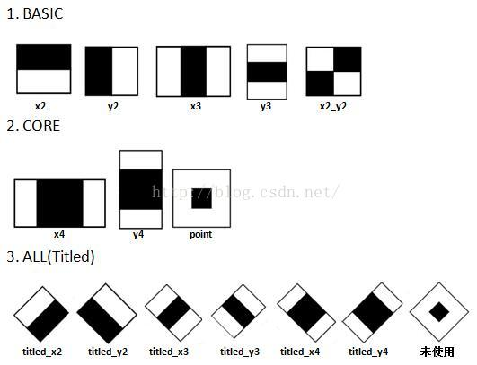
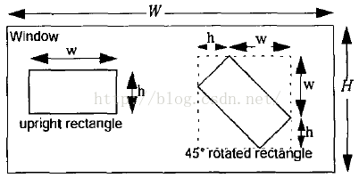
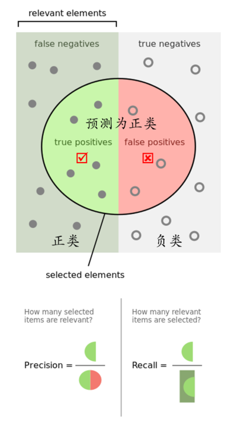

Haar特征
Haar特征简介
我们知道人脸检测是很不容易的，我们在实际进行人脸检测的时候，需要考虑算法的运行速度，以及算法的准确度，单单实现这两个指标就已经很不容易了。传统的人脸检测方法（指的是在Haar-like特征出来之前的方法，也就是2001年之前了）一般都是基于像素级别进行的，常见的方法有基于皮肤颜色的方法，这些方法的缺点就是速度慢，几乎不能实现实时性。
Haar特征最先由Paul Viola等人提出，后经过Rainer Lienhart等扩展引入45°倾斜特征，成为现在OpenCV所使用的的样子。图2展示了目前OpenCV（2.4.11版本）所使用的共计14种Haar特征，包括5种Basic特征、3种Core特征和6种Titled(即45°旋转)特征。

图2 OpenCV中使用的的Haar特征
如下图，以x3特征为例，在放大+平移过程中白：黑：白面积比始终是1:1:1。首先在红框所示的检测窗口中生成大小为3个像素的最小x3特征；之后分别沿着x和y平移产生了在检测窗口中不同位置的大量最小3像素x3特征；然后把最小x3特征分别沿着x和y放大，再平移，又产生了一系列大一点x3特征；然后继续放大+平移，重复此过程，直到放大后的x3和检测窗口一样大。这样x3就产生了完整的x3系列特征。

- 通过放大+平移的获得的子特征到底总共有多少个？
假设检测窗口大小为W*H，矩形特征大小为w*h，X和Y为表示矩形特征在水平和垂直方向的能放大的最大比例系数：


图5 特征数量计算示意图
则如图5，在检测窗口Window中，一般矩形特征(upright rectangle)的数量为：

简单解释一下，上述公式可以理解为：
1. 特征框竖直放大1倍，即无放大，竖直方向有(H-h+1)个特征2. 特征框竖直放大2倍，竖直方向有(H-2h+1)个特征3. 特征框竖直放大3倍，竖直方向有(H-3h+1)个特征4.如此到竖直放大Y=floor(H/h)倍，竖直方向有1个特征，即(H-Y*h+1)
那么竖直方向总共有(H-h+1)+(H-2h+1)+(H-3h+1)+......+(H-Y*h+1)=Y[H+1-h(1+Y)/2]个特征。考虑到水平和竖直方向缩放是独立的，所以能得到上述公式。对应于之前的x3特征，当x3特征在24*24大小的检测窗口中时（此时W=H=24，w=3，h=1，X=8，Y=24），一共能产生27600个子特征，除x3外其他一般矩形特征数量计算方法类似。
计算Haar特征值
以上公式生成大量Haar特征，这些特征用于训练和检测，接下来需要计算Haar特征值。按照OpenCV代码，Haar特征值=整个Haar区域内像素和×权重 + 黑色区域内像素和×权重：

1. 对于图2中的x3和y3特征，weightall = 1，weightblack = -3；
2. 对于point特征，weightall = 1，weightblack = -9；
3. 其余11种特征均为weightall =1， weightblack = -2。
特征值的含义
我选取了MIT人脸库中2706个大小为20*20的人脸正样本图像，计算如图6位置的Haar特征值，结果如图7。

图6 Haar特征位置示意图（左边对应人眼区域，右边无具体意义）

图7 图6的2个Haar特征在MIT人脸样本中特征值分布图
（左边特征结果为红色，右边蓝色）
可以看到，图6中2个不同Haar特征在同一组样本中具有不同的特征值分布，左边特征计算出的特征值基本都大于0，而右边特征的特征值基本均匀分布于0两侧（分布越均匀对样本的区分度越小）。所以，正是由于样本中Haar特征值分布不同，导致了不同Haar特征分类效果不同。显而易见，对样本区分度越大的特征分类效果越好，即红色曲线对应图6中的的左边Haar特征分类效果好于右边Haar特征。那么看到这里，应该理解了下面2个问题：
- 在检测窗口通过平移+放大可以产生一系列Haar特征，这些特征由于位置和大小不同，分类效果也各异；
- 通过计算Haar特征的特征值，可以有将图像矩阵映射为1维特征值，有效实现了降维
Haar特征值标准化
细心的朋友可能已经从图7中发现，仅仅一个12*18大小的Haar特征计算出的特征值变化范围从-2000~+6000，跨度非常大。这种跨度大的特性不利于量化评定特征值，所以需要进行“标准化”，压缩特征值范围。
OpenCV采用如下方式“标准化”：
1. 计算检测窗口中间部分(w-2)*(h-2)的图像的灰度值和灰度值平方和：

2. 计算平均值：

3. 计算标准化因子：

4. 标准化特征值：

积分图
通过“平移+放大”能够产生一系列数量巨大的Haar子特征，同时给出了Haar特征值计算公式。那么这就有一个问题：如何快速的计算出图像任意位置的某个Haar特征值？
- 一般积分图
在连续空间中一般采用积分方式计算体积、面积等和重量等物理量；而在离散空间中也可以用积分方式计算，只不过这里的“积分”实际上就是求和而已。
进对于灰度图像中任意一点image(x,y)，定义其积分图为sum(x,y)为：

其中image(x',y')为点(x',y')处的原始灰度图。这样就定义了一张类似于数学中“积分”的积分图。如图1，如果要计算D区域内灰度和，只需计算
sum(D) = sum(x4,y4) - sum(x3,y3) -sum(x2,y2) + sum(x1,y1)
其中(x1,y1)、(x2,y2)、(x3,y3)和(x4,y4)依次代表图1中image的1 2 3 4点的图像坐标。需要说明，在计算D区域灰度和时sum(x1,y1)深蓝色区域被减去了2次，最后需要补上。显然可以通过此方法快速计算图像中任意位置和大小区域的灰度和，即通过积分图只需要做有限次操作就能获得任意位置的Haar特征值

图1 积分图计算Haar矩形框示意图
进与上面理论不同的是，为了方便计算，在OpenCV中width*height的灰度图计算出的积分图大小为(width+1)*(height+1)。OpenCV中的积分图定义为：

缩进这种方式实际上对原积分图进行了“扩边”，积分图中第0行和第0列的值都为0。
计算方式如下为：
其中(r-1,c-1)左上点积分图值对应的深蓝区域被加了2次，所以要减去1次。这样就能够很快的求出积分图。

图2
- 45°旋转积分图
为了提高检测精度，Rainer Lienhart等人首先提出了45°旋转积分图，如图3。
进 与一般积分图类似，OpenCV中45°旋转积分图同样采用了“扩边”方式（即旋转积分图比原灰度图多1行和1列，其中第1行和第1列元素为0），对应的计算公式为：

OpenCV中的Adaboost级联分类器
如图1，其中每一个stage都代表一级强分类器。当检测窗口通过所有的强分类器时才被认为是目标，否则拒绝。实际上，不仅强分类器是树状结构，强分类器中的每一个弱分类器也是树状结构。

图1 强分类器和弱分类器示意图
（这张图有笔误，应该是stage0，stage1，...，stageN-1，各位看官理解就好）
新式XML结构
- XML的头部
- 弱分类器结构
一个完整的弱分类器包括：
1.若干个Haar特征 + 和Haar特征数量相等的弱分类器阈值
2. 若干个leftValue
3. 若干个rightValue
这些元素共同构成了弱分类器，缺一不可。haarcascade_frontalface_alt2.xml的弱分类器Depth=2，包含了2种形式，如图3。图3中的左边形式包含2个Haar特征、1个leftValue、2个rightValue和2个弱分类器阈（t1和t2）；右边形式包括2个Haar特征、2个leftValue、1个rightValue和2个弱分类器阈值。

图3 Depth=2的树状弱分类器示意图
缩进
看图3应该明白了弱分类器的大致结构，接下来我们了解树状弱分类器是如何工作的。还是以图3左边的形式为例：
- 强分类器结构
在OpenCV中，强分类器是由多个弱分类器“并列”构成，即强分类器中的弱分类器是两两相互独立的。
- 级联分类器
通过之前的介绍，到这应该可以理解OpenCV中：由弱分类器“并联”组成强分类器，而由强分类器“串联”组成级联分类器。那么还剩最后一个内容，那就是检测窗口大小固定（例如alt2是20*20像素）的级联分类器如何遍历图像，以便找到在图像中大小不同、位置不同的目标。
- 为了找到图像中不同位置的目标，需要逐次移动检测窗口（窗口中的Haar特征相应也随着移动），这样就可以遍历到图像中的每一个位置；而为了检测到不同大小的目标，一般有两种做法：逐步缩小图像or逐步放大检测窗口，这样即可遍历到图像中不同大小的目标
- 缩小图像就是把图像按照一定比例逐步缩小然后滑动窗口检测，如图7；放大检测窗口是把检测窗口长宽按照一定比例逐步放大，这时位于检测窗口内的Haar特征也会对应放大，然后检测。一般来说，如果用用硬件实现则缩小图像更快，用软件实现算法则放大检测窗口更快。

图7 经典的Pyramid+Sliding-window检测（借用一张大佬的照片）
缩进新版c++函数CascadeClassifier::detectMultiScale()只实现了缩小图像检测；旧版的c函数cvHaarDetectObject()同时实现了缩小图像和放大窗口两种检测方式，当函数参数flag为CV_HAAR_SCALE_IMAGE时是缩小图像检测，默认flag=0时放检测大窗口检测。
利用并查集合并检测结果窗口
级联分类器通过移动检测窗口寻找图像中不同位置的目标，同时通过放大检测窗口寻找图像中大小不同的目标，最终寻找到图像中不同位置、不同的大小的所有目标。那么必然存在这样的情况：一个被检测器检测为目标的窗口，其附近窗口也应该被检测到。例如在图像中的[x, y, w, h]窗口内检测到了人脸，那么[x-1, y-1, w+2, h+2]窗口也有极大的可能性被检测到，毕竟这2个窗口中的图像并没有明显差别（只是多了一个边而已）。
从图1左边可以看出，每个目标（人脸）附近都有一组重叠检测结果窗口，除此之外还有零散分布的误检结果窗口。看到这里你应该明白了有必要对重叠的检测结果窗口进行合并，同时剔除零散分布的错误检测窗口。今天写Faster RCNN突然想到，如果非要给这玩意起个高大上的名字，应该叫做NMS(non-maximum suppression)。


图1 检测结果合并窗口前后对比图
并查集(Union-Set)
详情点击链接
利用并查集合并检测结果窗口
- 定义窗口相似函数，即当前的两个窗口是不是“一伙人”
Rect结构体表示，其包含x,y,width,height共4个成员变量，分别代表窗口的左上角点x坐标、y坐标、宽度和高度。下面代码定义了窗口相似函数SimilarRects::operator()，当2个窗口r1和r2位置很接近时返回TRUE，通过SimilarRects::operator()就可以将图1那些重叠的窗口合并在“一伙人”中。
- 定义好窗口相似性函数后，就可以利用并查集合并窗口函数
1、首先利用MAKE-SET函数建立Rect对象的并查集初始结构
2、 然后遍历整个并查集，用SimilarRects::operator()判断每2个窗口相似性，若相似则将这2个窗口合并为“一伙人”；
3、运行完步骤2后应该出现几个相互间不相似的窗口“团伙”，当“团伙”中的窗口数量小于阈值minNeighbors时，丢弃该“团伙”（认为这是零散分布的误检）；
4、之后剩下若干组由大量重叠窗口组成的大“团伙”，分别求每个“团伙”中的所有窗口位置的平均值作为最终检测结果。
代码：
详情参考链接
训练过程
本系列文章讲解的是OpenCV中的opencv_traincascade.exe程序的实现方法，并不代表仅只有此一种实现方法
precision与recall（详情待补充）
对于所有的监督学习(supervised learning)，都需要一组正样本(positive samples)和负样本(negative samples)。以训练人脸检测器为例，人脸图片即正样本，所有的非人脸区域即为负样本。对于一组positive samples和negative samples，经过检测器后，会有以下4种情况：
positive sample会产生：
- TP(true positive)，即positive sample被检测器判定为目标
- FN(false negative)，即positive samples被检测器判断为非目标，相当于检测器“漏掉”了目标
negative sample会产生：
- TN(true negative)，即negative sample被检测器判定为非目标
- FP(false positive)，即negative sample被检测器判定为目标，相当于产生了“误检” or “虚警”
也就是说，在实际中不仅关心是否检测错误，更关心的是把“什么”检测成了“什么”，分类更加细致。借用知乎网友Charles Xiao的一张图：

其中论文中常见的两个指标：
precision = tp / (tp + fp)
recall = tp / (tp + fn)
hitRate与falseAlarm
而在Adaboost训练过程中，我们更关心的是minHitRate和maxFalseAlarmRate参数。
换个表达方式：
hitRate = tp / (tp + fn) = recall
falseAlarm = fp / (tn + fp)
这里hitRate称为“命中率”，度量检测器对正样本的通过能力，显然越接近1越好；而falseAlarm称为“虚警率”，度量检测器对负样本的通过能力，显然越接近0越好。

图3 adaboost级联结构
训练过程
样本收集过程
- 正样本patches收集过程
- 负样本patches收集过程
- 对1和2步骤来中这些自的正负样本的patches进行分类

图1 每个Stage训练前收集样本示意图
那么对于第0个初始stage，直接收集numPos个来自正样本的patches + numNeg个来自负样本的patches进行训练；对于第 i （i > 0）个stage，则利用已经训练好的 0 到 i - 1 的stage分类这些patches，分别从正样本patches中收集numPos个TP，从负样本patches中收集numNeg个FP（numPos和numNeg是在opencv_traincascade.exe中预先人工设置的）。每一个stage都要进行上述收集+分类过程，所以实际中每一个stage所使用的训练样本也都不一样！
分类器的训练过程
- 首先计算所有Haar特征对这numPos+numNeg个样本patches的特征值，排序后分别保存在的vector中，如图2

- 遍历每个存储特征值的vector，计算弱分类器
- 挑选最优弱分类器放进stage中
- 依照GAB方法更新当前训练的stage中每个样本的权重
- 计算当前的强分类器阈值stageThreshold
- 重复1-5步骤，直到满足下列任意一个条件后停止并输出当前的stage
(1) stage中弱分类器的数量 >= maxWeakCount参数(2) 利用当前的stage去检测FP获得当前stage的falseAlarmRate，当falseAlarmRate < maxFalseAlarmRate停止
- 然后重复1-6依次训练每一个stage，直到满足下面任意一个条件：
(1) stage数量 >= numStages(2) 所有stage总的falseAlarmRate < pow(maxFalseAlarmRate,numStages)
一个小例子
常用函数
- haarFeatureParams函数
mode参数
1. 如果mode为BASIC，则只使用BASIC的5种Haar特征进行训练，训练出的分类器也只包含这5种特征。2. 如果mode为CORE，则使用BASIC的5种+CORE的3种Haar特征进行训练。3. 如果mode为ALL，则使用BASICA的5种+CORE的3种+ALL的6种Titled共14种特征进行训练。需要说明，训练程序opencv_trancascade.exe一般默认使用BASIC模式，实际中训练和检测效果已经足够好。不建议使用ALL参数，引入Titled倾斜特征需要多计算一张倾斜积分图，会极大的降低训练和检测速度，而且效果也没有论文中说的那么好。
- 标准化
进具体代码在cascadedetect.cpp中的HaarEvaluator::setImage()函数中可以看到，关键部分如下：
normrect = Rect(1, 1, origWinSize.width-2, origWinSize.height-2);
CV_SUM_PTRS( p[0], p[1], p[2], p[3], sdata, normrect, sumStep );
CV_SUM_PTRS( pq[0], pq[1], pq[2], pq[3], sqdata, normrect, sqsumStep );